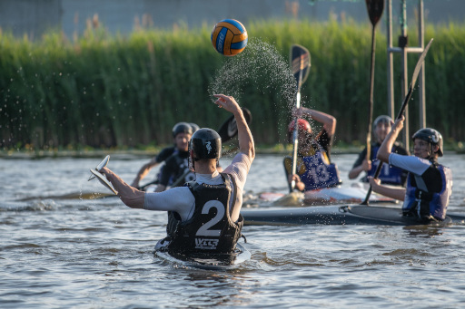

<link rel="import" href="../bower_components/polymer/polymer.html">
<link rel="import" href="../bower_components/google-youtube/google-youtube.html">
<link rel="import" href="../bower_components/iron-scroll-threshold/iron-scroll-threshold.html">
<link rel="import" href="../bower_components/paper-styles/shadow.html">
<link rel="import" href="windhappers-notification.html">
<link rel="import" href="windhappers-styles.html">

<link async rel="import" href="../bower_components/xsystems-calendar/xsystems-calendar-google.html">

<dom-module id="windhappers-page-home">
  <template>
    <style include="windhappers-styles">
      :host[narrow] {
        display: grid;
        grid-template-columns: auto;
        grid-gap: 1vh;
        padding: 1vh;
      }

      :host:not([narrow]) {
        display: grid;
        grid-template-rows: max-content auto auto; 
        grid-template-columns: 37% 37% auto;
        grid-auto-flow: column;
        grid-gap: 3vh;
        padding: 3vh;
      }

      :host:not([narrow]) #covid19 {
        grid-column: span 2;
      }

      #who, #nk {
        grid-row: span 2;
      }

      #wht2019 {
        grid-row: span 3;
      }

      article {
        background-color: white;
        padding: 2vh;
        @apply --shadow-elevation-4dp;
      }

      img, google-youtube {
        width: 100%;
        @apply --shadow-elevation-4dp;
      }

      :host[narrow] p {
        text-align: left;
      }

      xsystems-calendar-google {
        grid-row: span 5;
        @apply --shadow-elevation-4dp;
      }

      #windvlaag {
        color: var(--primary-color, inherit);
      }
    </style>

    <windhappers-notification id="covid19" type="warning">
      Naar aanleiding van de recente ontwikkelingen rond <b>COVID-19</b> (het corona virus) worden tot <b>6 april</b> geen verenigingsactiviteiten georganiseerd conform de richtlijnen van het RIVM.
    </windhappers-notification>

    <article id="who">
      <header>
        <h1>Welkom!</h1>
        <p>
          Kanovereniging De Windhappers is dé Haagse kanovereniging, gelegen in het recreatiegebied De Uithof in Den Haag. 
        </p>
      </header>
      <section>
        <p>
          Wij zijn een actieve kanovereniging met ongeveer 200 leden, van jong tot oud. We beschikken over een
          prachtig verenigingsgebouw voorzien van een gezellige kantine, een scala aan faciliteiten, een eigen haven,
          en botenloodsen. Onze leden doen aan (bijna) alle <a href="/disciplines" title="Disciplines">vormen van kanosport</a>: 
          toervaren (zowel in kajak als Canadese kano); kanopolo; zeevaren; brandingvaren; en wildwatervaren.           
        </p>

        <p>
          Elke woensdagavond is onze clubavond, kom gerust eens langs voor <a href="/costs">informatie</a> of maak een afspraak
          voor een proefvaart met een clubboot, geheel gratis en vrijblijvend.
        </p>

        <p>
          We verzorgen cursussen in kajakvaren, kanovaren, kanopolo, en zeevaren. Ook geven we lessen in
          eskimoteren in een verwarmd zwembad. 
        </p>

        <p>
          We organiseren regelmatig, uitdagende en gezellige <a href="/calendar" title="Kalendar">activiteiten</a>, 
          toertochten op vlakwater en op zee; kano kampeerweekenden; kanopolo competitie; en wildwatervaren in het buitenland. 
        </p>

        <!-- <google-youtube fluid="true"
                        video-id="IrEgMeSyn-E"
                        rel="0"
                        showinfo="0"
                        iv_load_policy="3"
                        modestbranding="1">
        </google-youtube> -->
      </section>
    </article>

    <article id="nk">
      <header>
        <h1>NK Kanopolo</h1>
        <p>
          Het Weekend van 7 en 8 september werd er bij Kanovereniging De Windhappers weer het Nederlands Kampioenschap kanopolo gespeeld.
          Nadat eerder in het seizoen al was gespeeld streden tientalle teams, op 4 velden voor het clubgebouw 
          en op de Wen, om de fel begeerde titel van Nederlands kampioen. Het was weer een geslaagd evenement!
        </p>
      </header>
      <google-youtube video-id="JIRRUBh4hrM" 
                      fluid="true"
                      rel="0"
                      showinfo="0"
                      iv_load_policy="3"
                      modestbranding="1"></google-youtube>
      <p>
        <a href="https://www.omroepwest.nl/nieuws/amp/3897931/Spetters-vliegen-in-het-rond-tijdens-finaleweekend-NK-Kanopolo-Den-Haag" target="_blank">Zie hier het volledige Omroep West artikel.</a>
      </p>
      <google-youtube video-id="g_JLCOqdJ8A" 
                      fluid="true"
                      rel="0"
                      showinfo="0"
                      iv_load_policy="3"
                      modestbranding="1"></google-youtube>
      <p>
        <a href="https://www.wos.nl/nk-kanopolo-op-de-wen-heel-fysiek-je-mag-heel-veel/nieuws/item?1142346" target="_blank">Zie hier het volledige WOS artikel.</a>
      </p>
    </article>

    <article id="club-magazine">
      <b>Op zoek naar ons clubblad <span id="windvlaag">De Windvlaag</span>? Kijk onder <a href="/documents">Documenten.</a></b>
    </article>

    <article id="wht2019">
      <header>
        <h1>Windhapper toernooi 2019</h1>
        <p>Het is weer tijd voor de 3e editie van het Windhapper kanopolo toernooi!</p>
      </header>
      <p>
          <b>Wedstrijdlijst</b>: 
          <a href="https://cpt.kayakers.nl/MatchList/WH2019?day=1" target="_blank">https://cpt.kayakers.nl/MatchList/WH2019?day=1</a>
      </p>
      <p> 
        Zondag 22 september, twee weken na het laatste NK weekend, 
        organiseren De Windhappers een super leuk toernooi voor de jeugd en 3e klasse.
        Daarmee is het een goede afsluiting van het kanopolo seizoen.
      </p>
      <ul>
        <li>Datum: zondag 22 September</li>
        <li>Klasse: jeugd en 3e klasse</li>
        <li>Waar: Kanovereniging De Windhappers in Den Haag</li>
        <li>Inschrijfkosten: €30 per team</li>
        <li>Velden: 2 (3 als er genoeg inschrijvingen zijn)</li>
        <li>Aantal wedstrijden: minimaal 4 per team</li>
      </ul>
      
      <p>
        Dit jaar hebben we voor de inschrijving besloten om de toernooien software van kayakers.nl te gebruiken.
        Klik op de volgende link om jouw team in te schrijven: <a href="https://cpt.kayakers.nl/View/WH2019" target="_blank">https://cpt.kayakers.nl/View/WH2019</a>
      </p>
      <p>
        Voor meer info en vragen kan je altijd mailen naar: <a href="mailto:windhappertoernooi@gmail.com">windhappertoernooi@gmail.com</a>
      </p>
      <p>
        Als je hebt ingeschreven kan er €30 over worden gemaakt naar <b>NL93 INGB 0000 2439 50</b> t.a.v. <b>Kanovereniging De Windhappers</b> (vergeet niet je team naam te melden).
      </p>
    </article>

    <xsystems-calendar-google narrow
                              hidden$="[[narrow]]"
                              calendars="[[_calendars]]"
                              time-zone="Europe/Amsterdam"
                              language="nl">
    </xsystems-calendar-google>
  </template>
  <script>
    (function() {
      'use strict';
      Polymer({
        is: 'windhappers-page-home',

        properties: {
          narrow: Boolean,
          _calendars: {
            type: Array,
            value: function() {
              return ['windhappers.nl_djorriihnjatt2p3it67t8v2bo@group.calendar.google.com', 'nl.dutch#holiday@group.v.calendar.google.com'];
            }
          }
        },

        created: function() {
          window.performance && performance.mark && performance.mark('windhappers-page-home: created');
          this.removeAttribute('unresolved');
        }
      });
    })();
  </script>
</dom-module>
